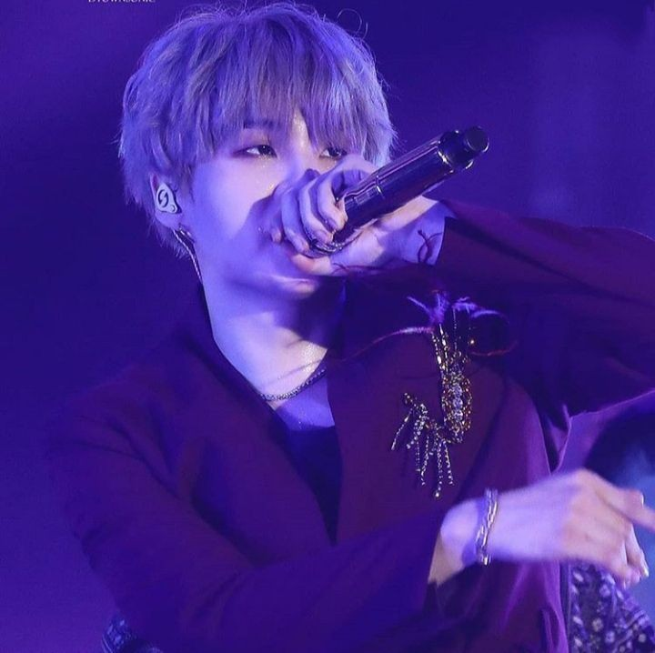

Min Yoon-gi
Biografia resumida:
Min Yoon-gi (SUGA) mais conhecido como suga, é um rapper, compositor e produtor musical sul-
coreano. Ele se tornou popularmente conhecido por ser um dos integrantes do grupo BTS.
Suga nasceu em 9 de Março de 1993 em Daegu no sudeste da Coreia do Sul. Ele começou a se
enteressar pela música no fundamental, para ser mais especifica no quinto ano, e também
começou a se interessar pelo hip-hop. No segundo curso da escola média actuou pela primeira
vez num palco interpretando o tema «Go Back» do grupo Dynamic Duo. Quando tinha treze
anos Suga começou a aprender sobre a tecnologia MIDI e a escrever suas próprias músicas.
Quando tinha 17 anos, ele passou a fazer parte de um grupo de rap underground chamado D-
Town, Suga disse em uma entrevista que em uma época ele compôs musicas e as vendias, era
um pouco difícil pagar as passagens e comer em seu trabalho, mas mesmo assim ele não
desistiu.
Em 2010, Suga participou nas audições Hit It organizadas por BigHit Entertainment. Ficou em
segundo na competição que se celebrou, e passou a fazer parte da companhia em 7 de
novembro de 2010, ele tinha entrado na big hit como compositor, mas depois ele entrou no
grupo BTS como rapper. Ele também já lançou algumas músicas solos, o jovem também tem
outro nome artístico Agust D.